Chapters
Use this page as the map for the manual. Each topic starts on its own page in the PDF so the guide is easier to scan during setup or while observing.
- First Start SetupInternet permission, privacy review, language, first location, telescope, and plan folder.
- HomeTelescope initialize and stop tracking time, main actions, and the bottom information card.
- LocationsGPS, manual entry, Address Info, default site, elevation, scrolling, and canceling a new location.
- TelescopeSmart telescope and accessory selection used in observing plans.
- Target SetupCatalog, Time, Filter, Current Setup, red/green card status, and stale target update behavior.
- Advanced Filters and ResultsMagnitude, altitude, azimuth, object types, Clear Sky ranges, obstructions, and validation.
- Observation TimeTarget start/stop time, after-midnight handling, and overlap checks.
- PlannerReview targets, sort, save, preview, print, share, load, and delete plans.
- Weather and Sky InfoDate/time period, source, Update, Sunset, Sunrise, Bortle/SQM, darkness, and hourly forecast rows.
- Set UpLanguage, units, internet permission, database updates, small-body updates, and About This App.
- Help and Clock SupportIn-app help and HHMM, 12-hour, and 24-hour time entry.
- TroubleshootingFast fixes for blank weather, missing targets, stale asteroid/comet data, and PDF or print issues.
- Quick Answer IndexEnd-of-manual index for common questions and the topic that answers them.
First Start Setup
- Answer whether the app may use the internet for setup and user-started database updates.
- Open the Privacy Statement link before answering if you want to review data handling. Set Up shows that local privacy review state later.
- Completed Internet, Privacy, and Plan Save Folder actions dim after they are set; use Clear and Start Over to reset first-start setup.
- The Finish card and Setup Checklist stay pinned. Collapse Details hides the explanatory setup text but keeps the checklist tick marks visible.
- Choose preferred language, primary viewing location, and primary telescope with accessories.
- After saving the primary telescope, the telescope editor collapses to the saved telescope/accessory summary and setup moves toward the plan folder step.
- Choose or create a plan folder in Files, or save the folder setting to complete that setup item.
- Use Finish Later only after the internet permission question has been answered.
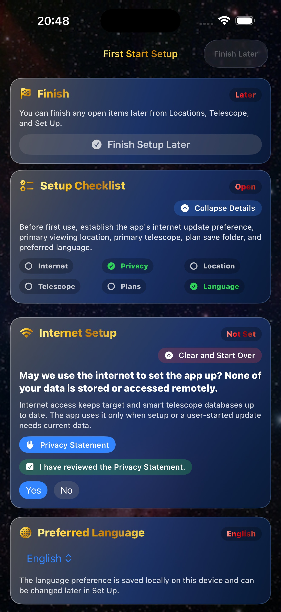
Home
- Home opens Locations, Telescope, Targets, Planner, Weather, Set Up, and Help.
- The telescope time entry accepts HHMM, 12-hour, and 24-hour values.
- Applying the telescope time window saves the observing window used by weather and target planning, then routes you to location setup.
- The compact top banner leaves room for the action buttons and bottom data card on iPhone.
- The My Telescope card uses tighter padding so the lower information card stays readable.
- The taller bottom data card shows Location Name, Telescope With Accessories, Total Targets, and Chosen Hemisphere Targets in larger dark yellow text on the standard blue background.
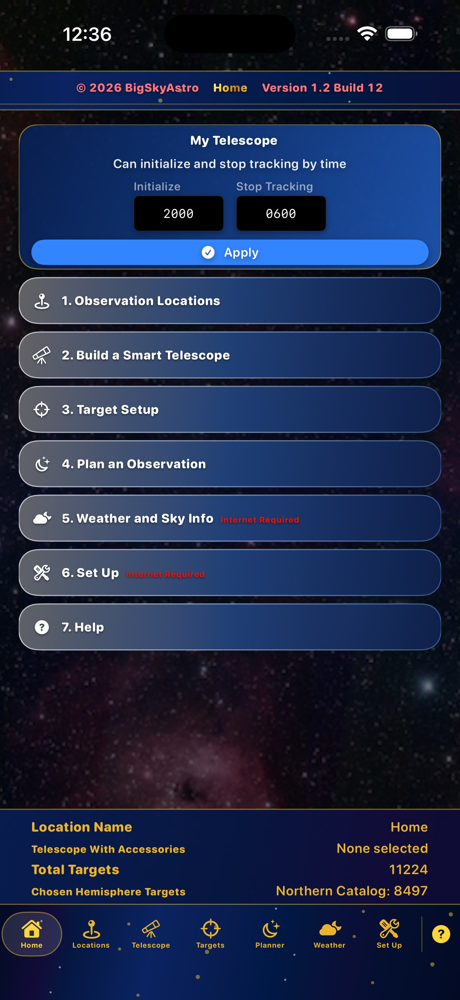
Locations
- Save at least one valid observing location before target filtering or weather.
- Use GPS when available. After GPS fills the site, Address Info collapses automatically and can be expanded again.
- If you start a new location card, use Cancel to leave without saving it.
- Manual address entry starts with Country so address labels match the selected country.
- The page scrolls while editing so lower fields and saved locations remain reachable.
- Only one saved location can be default at once.
- Set Default promotes a saved location without re-entering site details, and Delete Location removes old sites.
- Elevation is saved when available and is used for weather pressure adjustments.
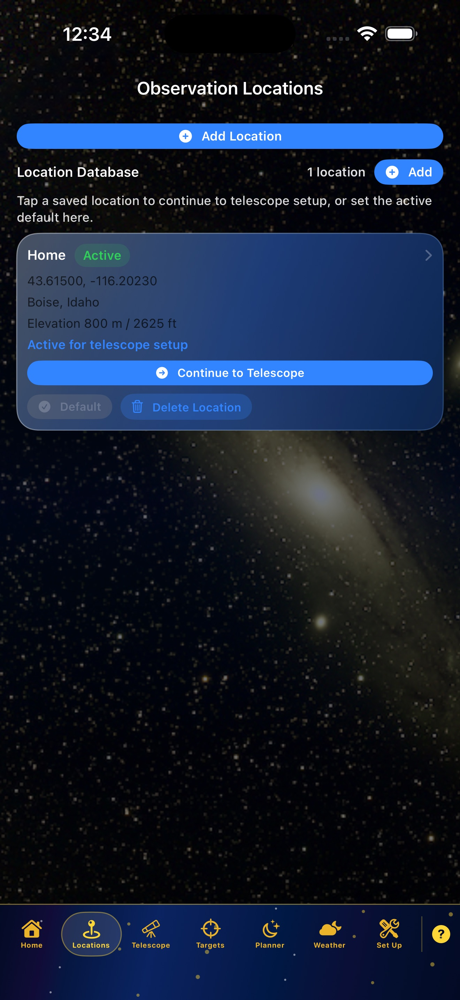
Telescope
- Select the smart telescope used for the observation plan.
- Select compatible accessories before saving the telescope setup.
- The planner report includes selected telescope and accessory names.
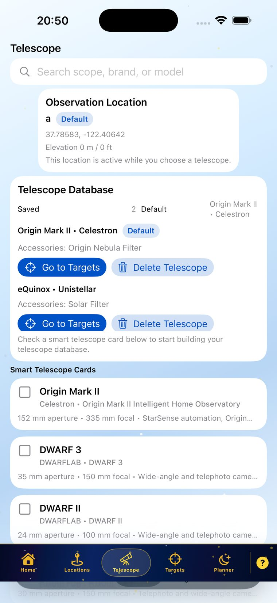
Targets
- Use Update Data when target sources need refreshing.
- Use the Current Setup card to expand or collapse the active target settings summary.
- Catalog, Time, and Filter cards open popups. Apply catalog, time, and filter changes from inside those popups before reviewing the target list.
- Action cards use glass status colors: green when a required setup block is valid, red until required user data is entered or the user has opened a filter without setting it.
- The top Apply action has been removed so Catalog and Current Setup have more room.
- Current target setup is held temporarily, so returning to Target Setup restores the active catalog, time, and filter choices.
- If transient target data is stale, target cards show Update Data and remain disabled until refreshed.
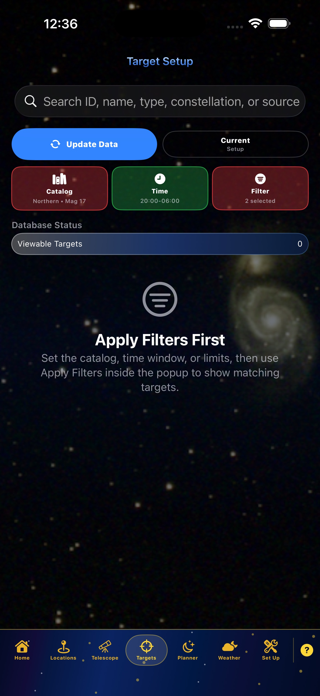
Advanced Filters and Results
- Use Advanced Filters for magnitude, altitude, magnetic azimuth, object type, and observing-window limits.
- Altitude limits accept 0 through 99 degrees. Azimuth limits accept 000 through 360 degrees.
- Obstruction ranges remove blocked azimuth or altitude areas from target candidates.
- Clear Sky filter ranges can be added one after another without closing the card, and a new range can be canceled before saving.
- Apply Filter validates required fields. If data is invalid, the app asks for the missing or corrected answer.
- Use Add to Planner for unscheduled targets or Go to Planner for targets already in the plan.
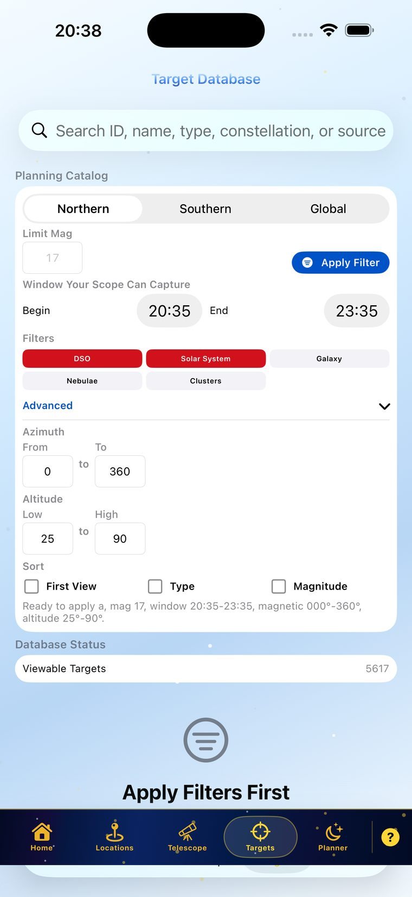
Observation Time
- Set start and stop time for each target.
- After-midnight times are normalized into the same observing night.
- The app checks for overlapping planned target windows before saving.
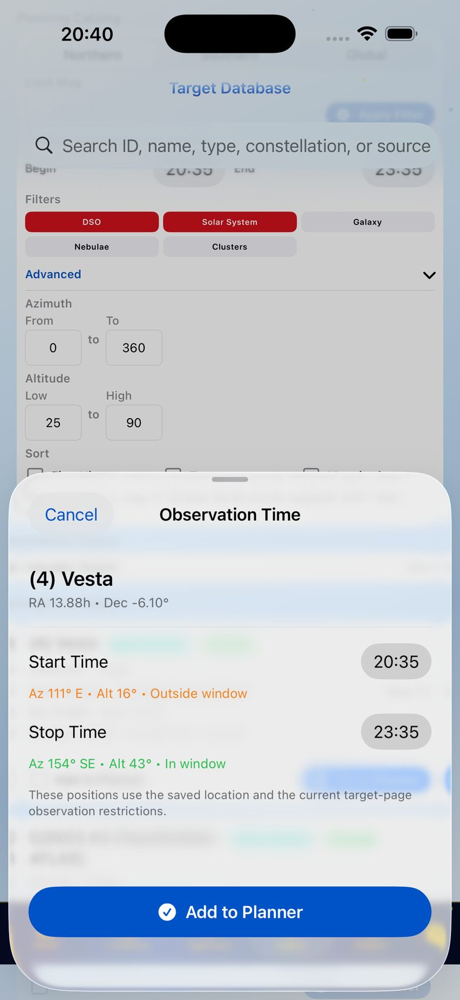
Planner
- Review targets and adjust observation times.
- Sort the plan by Start Time, Zenith, or Magnitude.
- Save PDF, Preview, Print Plan, Delete Plan, Load Plan, and Share Plan are available when a plan is present.
- After Load Plan, choose Yes to add more targets or No to stay on Planner.
- The loaded plan name and loaded-plan message turn yellow.
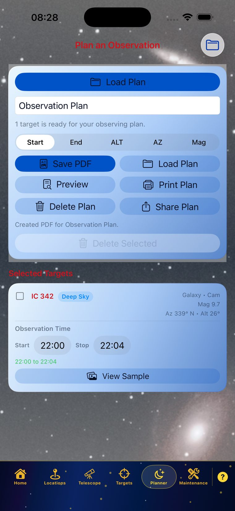
Weather and Sky Info
- Weather uses the default location and observing window.
- If My Telescope times are set, the viewing period follows that initialize/stop window until a saved plan takes over.
- The glass Date and Time Period Forecast card lists the active observing date and time range.
- The Sun/Moon glass card shows Sunset, Sunrise, Bortle/SQM, and time of total darkness based on the saved location.
- Bortle/SQM is estimated from the saved latitude, longitude, elevation, and nearby population light-pressure reference used by the app.
- The compact Source row names the weather source and includes Update to reload the hourly data.
- Hourly rows list time, icon, cloud percentage, rain chance, pressure trend, temperature, and dew point.
- The Done action is kept above the menu bar on iPhone.
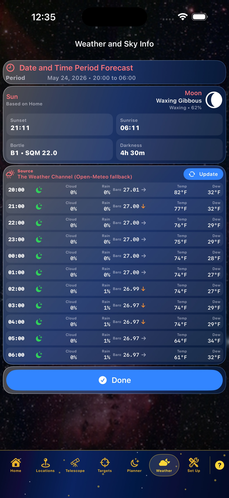
Set Up
- Set Up contains language, units, internet permission, update actions, and About This App.
- Internet-required actions are labeled.
- Target and smart telescope database updates are user-started.
- Target Database Update summarizes changed transients, lists their names, and shows pulled-and-stored asteroid and comet names such as Ceres and Vesta.
- Off-site pages open inside a controlled in-app browser with a return button.
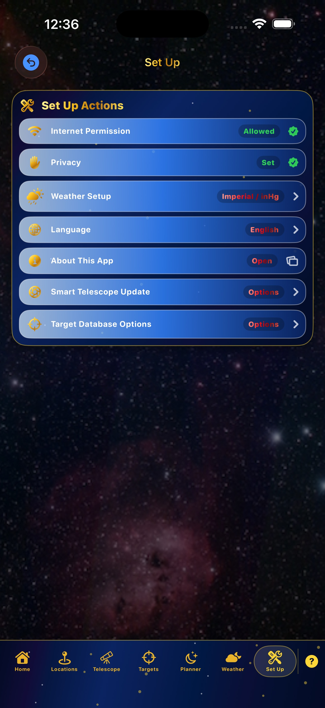
Help and Clock Support
- Open Help from the question mark icon.
- Help mirrors the major manual sections in shorter form.
- Time entry accepts HHMM, 12-hour, and 24-hour formats, while displayed times follow the iPhone or iPad clock preference.
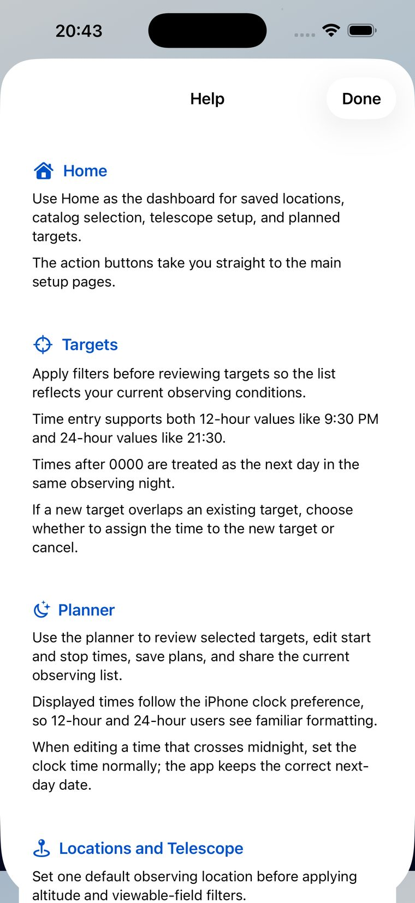
Troubleshooting
No targets appear
- Save a default location.
- Set required red Catalog, Time, or Filter cards, then use Apply Filters inside the popup.
- Loosen magnitude, altitude, azimuth, object type, and obstruction settings.
Weather is blank
- Save a valid default location with latitude and longitude.
- Confirm internet permission for weather prediction data.
- Add elevation when available.
Location will not save
- Enter a location name.
- Use GPS or enter latitude and longitude.
- Choose Country first for manual address entry.
Plan load is confusing
- Watch for the Plan Loaded prompt.
- Choose Yes to add targets or No to remain on Planner.
- Yellow plan text identifies a loaded plan.
Numeric keypad covers fields
- Dismiss the keypad after entering the value.
- Scroll cards under the filter card.
- Collapse advanced filters after applying.
Asteroids or comets look stale
- Run Target Database Update from Set Up.
- Review the update summary for Small bodies updated, Pulled and stored, and Changed transients.
- Stale transient target cards cannot be used until data is refreshed.
PDF or print does not appear
- Confirm at least one target exists in the plan.
- Use Preview first.
- Use Share Plan if the device print sheet is unavailable.
All app data stays on the device. Internet access is used only for selected updates, weather, image lookup, privacy/support pages, and other user-started online actions.
Quick Answer Index
Use this final page when you know the problem or setting but do not remember which topic explains it.
- Address Info after GPSSee Locations: GPS fills the site, collapses Address Info, and allows it to reopen.
- Add targets to a planSee Target Setup, Advanced Filters and Results, and Observation Time.
- Altitude or azimuth limitsSee Advanced Filters and Results: altitude is 0 to 99 degrees, azimuth is 000 to 360 degrees.
- Asteroids or comets look staleSee Set Up and Troubleshooting: run Target Database Update and check the summary.
- Bortle, SQM, and darknessSee Weather and Sky Info: values are based on the saved location and observing window.
- Catalog card is redSee Target Setup: set catalog scope and magnitude, then apply inside the popup.
- Clear Sky filter rangesSee Advanced Filters and Results: add ranges one after another, or cancel a new range.
- Current Setup summarySee Target Setup: expand it to review active catalog, time, and filter settings.
- Default observing locationSee Locations: only one saved location is active at a time.
- Filter card is redSee Target Setup: open the Filter popup, enter the required data, and apply it.
- Home telescope timeSee Home: enter initialize and stop tracking time in HHMM, 12-hour, or 24-hour form.
- Hourly weather rowsSee Weather and Sky Info: rows show time, icon, cloud, rain, pressure, temperature, and dew point.
- Internet permissionSee First Start Setup and Set Up: online work is user-started.
- Load a saved planSee Planner: choose Yes to add more targets or No to stay on Planner.
- No targets appearSee Troubleshooting: confirm location, set red cards, and loosen filters.
- PDF or print planSee Planner and Troubleshooting: preview first, then print, save, or share.
- Plan folderSee First Start Setup: choose or create a Files folder for saved plan output.
- Source of weatherSee Weather and Sky Info: the source row names the provider and includes Update.
- Stale transient target cardSee Target Setup: disabled cards require Update Data before use.
- Sunset and SunriseSee Weather and Sky Info: the Sun/Moon card shows Sunset first and Sunrise second.
- Time after midnightSee Observation Time: after-midnight values are normalized into the same observing night.
- Update DataSee Target Setup and Set Up: refresh local target and transient data when needed.
- Weather is blankSee Troubleshooting: save location, confirm internet permission, and include elevation when available.